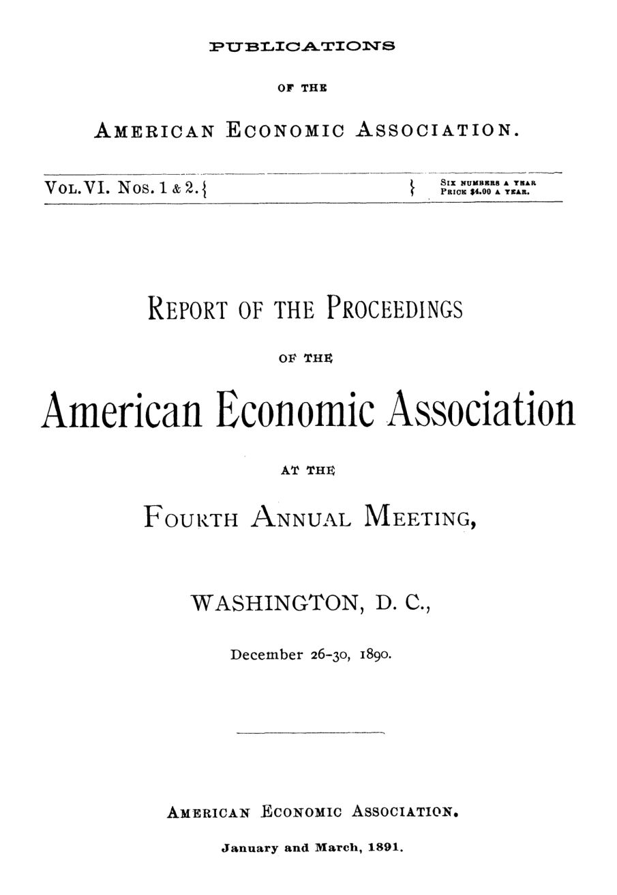

Washington, 1890: tarifas, impostos, gás e a maré das ideias
Leitura: 9 min
Cinco dias em Washington, em dezembro de 1890: custo conjunto nas ferrovias, quem paga o imposto predial, gás municipal a centavos e a armadilha do sweating system.


Na noite de 26 de dezembro de 1890, em Washington, Francis A. Walker abriu seu discurso presidencial descrevendo uma enchente. A maré do pensamento econômico, disse, já não enchia apenas as baías: rompera as barreiras da tradição e da autoridade e invadia a terra firme. Tudo o que parecia assentado na teoria estava sendo contestado, da propriedade da terra à própria propriedade privada.
O quarto encontro anual da American Economic Association durou de 26 a 30 de dezembro, em nove sessões: oito na Columbian University e a nona, conjunta com a American Forestry Association, no National Museum. Segundo o relatório, o público foi o maior de todos os encontros até então. Os temas iam da teoria do valor às florestas públicas, passando por ferrovias, estatística, impostos, ensino e problemas sociais.
Houve também mudanças internas. A anuidade vitalícia subiu de 25 para 50 dólares, por votação unânime. Criou-se uma Comissão de Publicações de cinco membros, presidida por F. H. Giddings, e a associação anunciou traduções de obras estrangeiras e folhetos populares sobre questões do momento.
O volume reúne o discurso de Walker na íntegra e resumos revistos pelos próprios autores, com os debates condensados. A seguir, os cinco textos de maior substância e, depois, o restante.
O que Walker via na enchente de ideias de 1890?
Walker passou em revista quatro temas: o Nacionalismo, o imposto único, a moeda e a imigração. O Nacionalismo, movimento inspirado na utopia de Bellamy, era para ele um pseudo-socialismo. Mas via nos reformadores recrutas indisciplinados, não desertores da boa economia, e culpava em parte os colegas, que trataram o homem econômico de Ricardo como se valesse mais que todos os homens reais.
“A revolução em curso está fazendo de cada homem e de cada mulher um economista.” (The revolution now in progress is making every man and every woman an economist.)
Ao imposto único de George concedeu que não era absurdo nem, com indenização aos donos atuais, desonesto. Era apenas mal nomeado: tomar a renda econômica da terra não seria imposto, e sim prerrogativa do Estado. A crítica mais dura foi para a moeda. Ao negar que o greenback fosse dinheiro e ao desdenhar os males da contração monetária, os economistas ortodoxos teriam perdido autoridade justamente quando crescia a pressão pela prata.
Por fim, a imigração: 5,25 milhões de estrangeiros chegaram na década encerrada em 1º de julho de 1890, o dobro de qualquer década anterior. Walker pediu que a associação estudasse a restrição legal, com uma descrição dos novos imigrantes em termos depreciativos hoje inaceitáveis.
Por que a ferrovia cobra o que o tráfego aguenta?
F. W. Taussig, de Harvard, atacou uma anomalia aparente: por que tarifas tão diferentes para cargas e passageiros que usam os mesmos trilhos? Sua resposta foi o custo conjunto, o mesmo da ovelha que dá lã e carne ou da usina que dá gás e coque. Leito, trilhos, pontes e estações servem a todo o tráfego ao mesmo tempo.
A conta: os juros sobre o capital absorvem cerca de metade da receita, e, pela estimativa de Sax que Taussig endossa, metade das despesas operacionais independe do volume transportado. Ao menos três quartos do custo total são, portanto, conjuntos. Cada carga precisa cobrir apenas o custo que gerou separadamente; quanto do custo comum ela paga depende da demanda.
“cobrar o que o tráfego aguenta” (charging what the traffic will bear)
Essa prática, concluiu, decorre da natureza da indústria, não do arbítrio dos gerentes, e por isso aparece também sob gestão pública: a Alemanha tentou uma tarifa baseada no custo e voltou a uma tarifa diferencial. No debate, Seligman respondeu que a ferrovia é praticamente um monopólio, e que essa regra é só a teoria do preço de monopólio. Ely lembrou que muitas linhas eram construídas por especulação. Taussig insistiu que oferecia teoria, não um argumento contra a regulação.
Quem paga, de fato, o imposto predial?
Edwin R. A. Seligman, do Columbia College, começou pelo campo. Nas cidades, os bens móveis escapam em grande parte ao fisco; no interior, o imposto sobre a propriedade é de fato geral, e o agricultor carrega mais do que deveria. Ricardo dizia que esse imposto subiria os preços e cairia sobre o consumidor. Seligman discorda: o preço do trigo do Oeste é fixado em Liverpool, e o agricultor não recebe nada a mais se o imposto dobrar.
Na cidade, ele separa terreno e construção. O imposto sobre o terreno, cobrado do dono, não se transfere: o proprietário apenas recebe menos renda líquida. O imposto sobre a construção, em regra, vai para o inquilino, porque, se reduzisse o lucro do construtor abaixo do usual, as obras cessariam e os aluguéis subiriam. A exceção são os bairros em decadência, sem demanda que o absorva.
Conclusão para o imposto predial americano: em cidades estagnadas, ele fica com o proprietário; nas prósperas, a maior parte recai sobre o inquilino. O sistema inglês, que cobra do ocupante, seria talvez o menos equitativo de todos. No debate, Taussig pediu uma resposta mais clara sobre a parcela do terreno.
O gás municipal funcionava?
Edward W. Bemis, da Vanderbilt University, contou nove cidades americanas donas da própria usina de gás. Hamilton, em Ohio, começara cedo demais para ter resultados. As outras oito, entre elas Filadélfia, Wheeling e quatro cidades da Virgínia, tinham recusado havia pouco boas ofertas de empresas privadas para assumir as usinas.
O caso mais disputado era Filadélfia, dona da usina desde 1841. Até 1886 a gestão ficou com um conselho de curadores que se autoperpetuava, sem responder ao público, e que, diz Bemis, naturalmente se corrompeu. De volta ao controle municipal, a gestão melhorou: em 1889 o custo foi de 74 centavos por mil pés cúbicos, sem contar juros e impostos.
Bemis não esconde os custos políticos: as usinas públicas pagavam um pouco mais ao trabalho comum e tendiam a empregar gente do partido dominante, mas isso raramente chegava aos superintendentes. Para ele, o capital das empresas privadas, às vezes duas a quatro vezes maior que o custo da planta, revelava lucros de monopólio.
Por que o sweating system parecia sem saída?
Katharine Coman, do Wellesley College, estudou a alfaiataria de Londres e concluiu que o sweating system, o trabalho por empreitada a preço mínimo em oficinas precárias, não era uma forma peculiar de organização. Nem a firma atacadista, nem o intermediário, nem o empreiteiro eram os culpados.
“o sweating system é simplesmente a luta competitiva pela existência nos níveis mais baixos” (the sweating system is simply the competitive struggle for existence on the lowest levels)
Boston mostrava o processo. De 1840 a 1875, a cidade foi o centro do atacado de roupas, com trinta ou quarenta grandes casas. De 1860 a 1875 viveu sua idade de ouro, com grandes oficinas e salários altos. Depois, Nova York e Chicago, com mão de obra imigrante barata e o chamado sistema de Londres, passaram a vender mais barato, e as firmas de Boston fecharam suas oficinas para terceirizar.
Quem aceitava 5 dólares por semana expulsava as costureiras mais bem pagas; as que terminavam peças em casa ganhavam, com esforço extremo, 2,50 dólares. As queixas incluíam ainda emprego irregular, pagamento incerto e oficinas insalubres. Coman dizia desesperar da associação, da cooperação e da educação, e propunha proteger o trabalhador americano da concorrência estrangeira.
O que mais havia no volume?
F. H. Giddings, do Bryn Mawr College, distinguiu dois sentidos de utilidade, dois de valor subjetivo e quatro de custo.
Charles H. Cooley, do Censo, descreveu o bonde como órgão social: a área habitável cresce com o quadrado da velocidade dos carros.
Henry C. Adams, da Universidade de Michigan, propôs relatórios obrigatórios e controle público para todas as corporações.
Thomas G. Shearman rebatizou a tributação indireta de tributação torta e disse que nela os pobres pagam dez vezes sua parte.
Simon N. Patten defendeu a economia política como rival da matemática na formação do raciocínio; no debate sobre ensino técnico, disse que o desperdício migrara para o consumo.
Edward A. Bowers mostrou que a proteção das florestas públicas ainda se apoiava numa lei de 1817 sobre madeira para a Marinha.
Albert Shaw relatou a fundação da British Economic Association, em 20 de novembro de 1890, por iniciativa de Marshall, Giffen e Foxwell.
Na minha leitura
Na minha leitura, o melhor do volume são as perguntas de incidência. Taussig e Seligman separam quem recolhe de quem arca, e quem causa um custo de quem o reparte. Essas perguntas continuam sendo o ponto de partida de qualquer discussão séria sobre tarifas de infraestrutura e imposto imobiliário. Bemis acrescenta uma lição de governança: o problema de Filadélfia não era a propriedade pública em si, mas um conselho que não prestava contas a ninguém.
A economia aplicada fica mais vulnerável justamente quando a tese confirma o que o público já sente.
Glossário
- custo conjunto
- custo de uma estrutura que serve a vários produtos ao mesmo tempo e não pode ser repartido entre eles por cálculo técnico.
- incidência tributária
- quem efetivamente suporta o peso de um imposto, que nem sempre é quem o recolhe.
- renda econômica
- excedente do produto das terras mais favorecidas sobre o custo de produção.
- imposto único
- proposta de apropriar pelo Estado a renda econômica da terra em lugar dos demais impostos.
- sweating system
- produção de roupas por empreiteiros, em oficinas precárias ou em casa, a preços mínimos.
Artigos desta edição
- The Tide of Economic Thought — Francis A. Walker (pp. 15–38). Discurso presidencial que compara o interesse público por economia a uma enchente que derrubou a tradição. Walker examina o Nacionalismo, que considera pseudo-socialismo, mas vê nos reformadores futuros recrutas da disciplina; o imposto único, que julga praticável e honesto se houver indenização, embora mal nomeado; a moeda, criticando os ortodoxos que negaram que o greenback fosse dinheiro e desprezaram os males da contração; e a imigração, cuja restrição legal pede que a associação investigue, em termos depreciativos aos novos imigrantes. JSTOR
- A Contribution to the Theory of Railroad Rates — F. W. Taussig (Harvard University) (pp. 52–63). Explica a diversidade de tarifas ferroviárias pelo custo conjunto: juros absorvem cerca de metade da receita e metade das despesas operacionais independe do volume, de modo que ao menos três quartos do custo são comuns a todo o tráfego. A parcela de cada carga no custo comum depende da demanda, o que explica a regra de cobrar o que o tráfego aguenta, inclusive sob gestão pública. No debate, Seligman a trata como preço de monopólio e Ely aponta a especulação na construção das linhas. JSTOR
- The Incidence of Local Taxation — Edwin R. A. Seligman (Columbia College) (pp. 79–85). Analisa a incidência do imposto local sobre imóveis. No campo, o agricultor arca com a maior parte, pois o preço do trigo é fixado no mercado mundial. Na cidade, o imposto sobre o terreno cobrado do dono não se transfere; o imposto sobre a construção normalmente passa ao inquilino. Nas cidades prósperas, a maior parte do imposto predial americano recai sobre o inquilino; o sistema inglês, cobrado do ocupante, seria o menos equitativo. JSTOR
- Municipal Ownership of Gas Works in the United States — Edward W. Bemis (Vanderbilt University) (pp. 138–140). Examina as nove cidades americanas donas de usinas de gás. Filadélfia, após décadas sob curadores sem prestação de contas, produziu em 1889 a 74 centavos por mil pés cúbicos, ou US$ 1,02 com juros e impostos; Richmond, a 76 centavos. As cidades recusaram ofertas privadas. Bemis registra salários algo maiores e favorecimento partidário em cargos baixos, e vê no capital inflado das empresas privadas sinal de lucros de monopólio. JSTOR
- The Tailoring Trade and the Sweating System — Katharine Coman (Wellesley College) (pp. 144–147). Partindo de Londres e da história da alfaiataria de Boston, sustenta que o sweating system é a concorrência nos níveis mais baixos do trabalho não qualificado. Boston, centro do atacado de roupas de 1840 a 1875, perdeu mercado para Nova York e Chicago, que usavam mão de obra imigrante barata e empreiteiros. Costureiras ganhavam 5 dólares por semana, e as que trabalhavam em casa, 2,50. Coman conclui pedindo proteção contra a concorrência estrangeira. JSTOR
- The Fourth Annual Meeting — Relatório do encontro (pp. 9–12). Washington, 26 a 30 de dezembro de 1890; nove sessões; anuidade vitalícia elevada a 50 dólares; criação da Comissão de Publicações. JSTOR
- The Concepts of Utility, Value and Cost — F. H. Giddings (Bryn Mawr College) (pp. 41–43). Distingue utilidade objetiva e subjetiva, valor subjetivo e de mercado, e quatro sentidos de custo. JSTOR
- The Social Significance of Street Railways — Charles H. Cooley (United States Census) (pp. 71–73). O bonde distribui a população em torno dos centros industriais; tarifa baixa e velocidade importam mais que receita municipal. JSTOR
- Statistics as a Means of Correcting Corporate Abuses — Henry C. Adams (University of Michigan) (pp. 73–78). Corporações têm privilégios especiais e devem prestar relatórios que permitam ao governo dirigir sua política e controlar sua administração. JSTOR
- Crooked Taxation — Thomas G. Shearman (pp. 88–95). Ataque à tributação indireta: recai sobre o consumo, desvia receita para fins privados e pesa mais sobre os pobres. JSTOR
- The Educational Value of Political Economy — Simon N. Patten (University of Pennsylvania) (pp. 100–115). A economia política, por combinar dedução e indução, pode rivalizar com a matemática como disciplina do raciocínio. JSTOR
- Economic Aspects of Technical Education — Francis A. Walker (abertura, sem resumo) e debatedores (pp. 115–128). Debate sobre ensino técnico; Patten sustenta que o desperdício migrou da produção para o consumo doméstico. JSTOR
- The Condition of the Forests on the Public Lands — Edward A. Bowers (pp. 154–157). Leis obsoletas empurram colonos ao roubo de madeira; 25 agentes para 70 milhões de acres; recuperação ínfima. JSTOR
- The British Economic Association — Albert Shaw (pp. 163–174). Fundação da associação britânica em 20 de novembro de 1890, com Goschen na presidência e Edgeworth como secretário e editor. JSTOR
Fontes
- The Fourth Annual Meeting (pp. 9–12). JSTOR · Internet Archive (PDF)
- The Tide of Economic Thought (pp. 15–38). JSTOR · Internet Archive (PDF)
- The Concepts of Utility, Value and Cost (pp. 41–43). JSTOR · Internet Archive (PDF)
- A Contribution to the Theory of Railroad Rates (pp. 52–63). JSTOR · Internet Archive (PDF)
- The Social Significance of Street Railways (pp. 71–73). JSTOR · Internet Archive (PDF)
- Statistics as a Means of Correcting Corporate Abuses (pp. 73–78). JSTOR · Internet Archive (PDF)
- The Incidence of Local Taxation (pp. 79–85). JSTOR · Internet Archive (PDF)
- Crooked Taxation (pp. 88–95). JSTOR · Internet Archive (PDF)
- The Educational Value of Political Economy (pp. 100–115). JSTOR · Internet Archive (PDF)
- Economic Aspects of Technical Education (pp. 115–128). JSTOR · Internet Archive (PDF)
- Municipal Ownership of Gas Works in the United States (pp. 138–140). JSTOR · Internet Archive (PDF)
- The Tailoring Trade and the Sweating System (pp. 144–147). JSTOR · Internet Archive (PDF)
- The Condition of the Forests on the Public Lands (pp. 154–157). JSTOR · Internet Archive (PDF)
- The British Economic Association (pp. 163–174). JSTOR · Internet Archive (PDF)
- Sumário da edição no JSTOR: Publications of the American Economic Association, vol. 6, nº 1/2.
Documento em domínio público (EUA, publicado antes de 1931), via JSTOR Early Journal Content e Internet Archive. Resumo e comentário do autor deste site, sem afiliação com a American Economic Association. Encontrou um erro? Escreva: a correção é publicada no próprio texto, com data.
← Nº 27 · Por que a economia deveria tomar o lugar da física no currículo Nº 29 · Florestas públicas, 1891: uma lei da Marinha contra o machado →